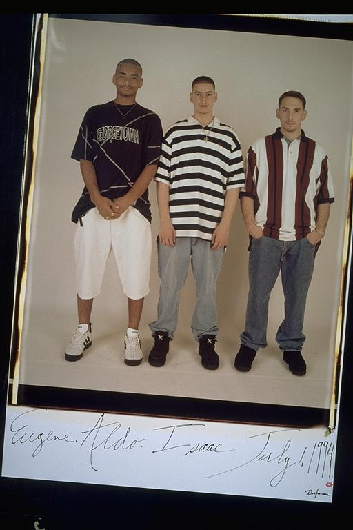

Pals: Boys Who Grew Up Together
elsadorfman.com/pals
Aldo: As we got older, we continued to size out. I think now, almost eight years later, I'm about the same size. Eugene as well is about the same size. Only Isaac, who continued to exercise, is noticeably physically different. It's interesting to see at what age we kind of stopped growing physically. These days, if there is any growing going on it's horizontally not vertically. A sad reminder that we can no longer take our health for granted.

elsad@comcast.net